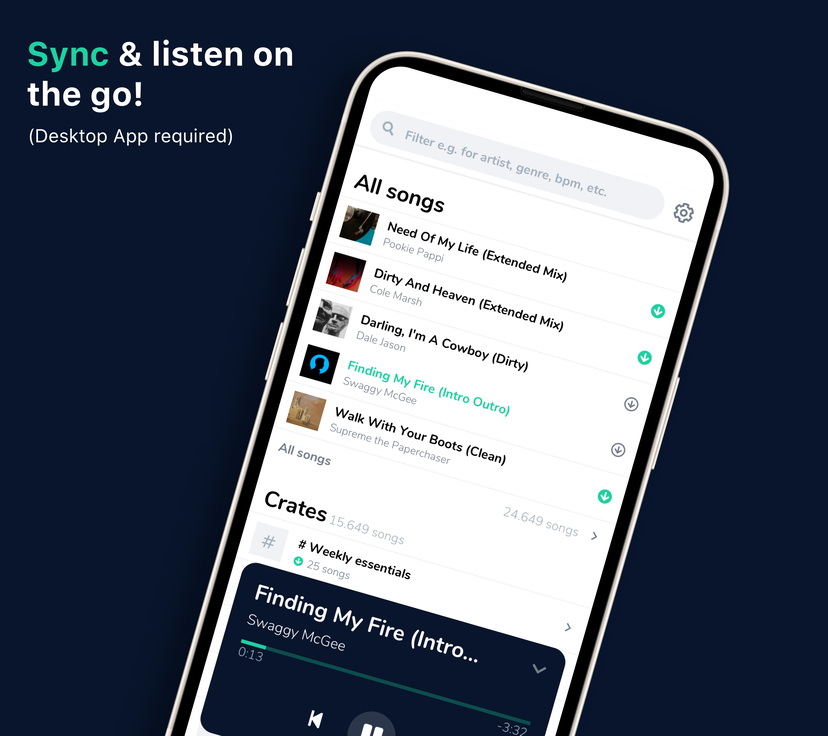

Retired project · Archive
My DJ Cloud
Cloud backup and library sync built for DJs. My DJ Cloud helped safeguard music files and the details that make a DJ library personal.
My DJ Cloud has been retired. This page preserves information from its public website captured on October 18, 2026. Features, downloads, and prices below describe the former service.
How it worked
DJs installed the desktop app, selected their DJ software and music folders, and let it back up library changes in the background. The site described backups for Serato, rekordbox, and VirtualDJ.
Library and file backup
Music files, tags, cue points, crates, edits, and other library changes were backed up automatically.
Quick and Smart Sync
Folder selection made setup quick. Smart Sync was designed to avoid syncing while a DJ was performing.
Mobile streaming
The mobile app let DJs search and stream their collection using music metadata.
Details worth preserving
The service was built around the risk of losing a carefully curated music library to a failed drive, stolen device, lost laptop or external drive, or a missing backup.
- Support for iTunes managed libraries and emoji in filenames and crates
- Library sync, MP3 storage, and duplicate detection listed on the site
- Desktop apps for Mac and Windows, with iOS and Android mobile apps
DJ software

Plans shown on the former site
These were the advertised monthly plans when the public website was captured. They are historical information, not available offers.
Essential
200 GB$7.99 per month
Library backup · File backup · Mobile streaming · Duplicate detectionProfessional
2,000 GB$11.99 per month
Library backup · File backup · Mobile streaming · Duplicate detection